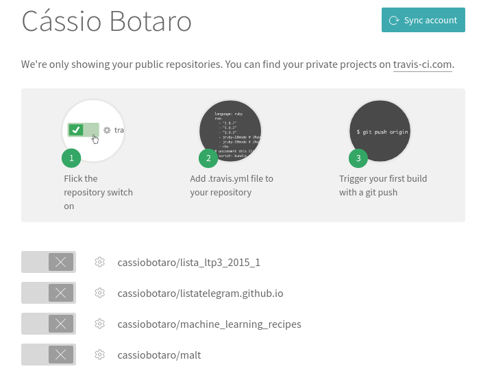

✅ Integração contínua

Conceito
O desenvolvedor integra o código alterado e/ou desenvolvido ao projeto principal na mesma frequência com que as funcionalidades são desenvolvidas, sendo feito muitas vezes.
Todo o nosso projeto será construído utilizando testes automatizados, e sempre rodaremos os testes localmente.
Mas como garantir que minha alteração não impacta com o restante do projeto, ter isto de forma simples e automatizada? Como garantir que a qualidade do código foi mantida?
Utilizaremos o serviço travis para checar que nosso código não quebra a "build", ou seja, quando integrado o novo código ao sistema, todo o sistema continua funcional.
Basicamente, a grande vantagem da integração contínua está no feedback instantâneo. Isso funciona da seguinte forma: a cada commit no repositório, o build é feito automaticamente, com todos os testes sendo executados de forma automática e falhas sendo detectadas. Se algum commit não compilar ou quebrar qualquer um dos testes, a equipe toma conhecimento instantâneamente (através de email, por exemplo, indicando as falhas e o commit causador das mesmas). A equipe pode então corrigir o problema o mais rápido possível, o que é fundamental para não introduzir erros ao criar novas funcionalidades, refatorar, etc. Integração contínua é mais uma forma de trazer segurança em relação a mudanças: você pode fazer modificações sem medo, pois será avisado caso algo saia do esperado.
Passo a passo
Utilize sua conta do github para cadastrar no travis.

Seus projetos estarão listados da seguinte maneira

Escolha o projeto todoapp e habilite a integração contínua.
No seu projeto crie um arquivo chamado .travis.yml com o seguinte conteúdo.
dist: xenial
language: python
python:
- 3.8
install:
- pip install -r dev-requirements.txt
script:
- python -m pytest
 Pronto, a partir de agora, o travis irá rodar todos os testes do seu projeto de forma automatizada e indicará se a construção do mesmo está com problemas.
Pronto, a partir de agora, o travis irá rodar todos os testes do seu projeto de forma automatizada e indicará se a construção do mesmo está com problemas.
Isto será extremamente útil nos próximos passos.
üíæ Para terminar a integra√ß√£o com travis, salve a versão atual do projeto e veja a primeira constru√ß√£o sendo realizada.
$ git add .travis.yml
$ git commit -m "integração contínua"
üîß Não esque√ßa de enviar ao github a versão atualizada do projeto, para disparar a nossa integra√ß√£o cont√≠nua.
$ git push